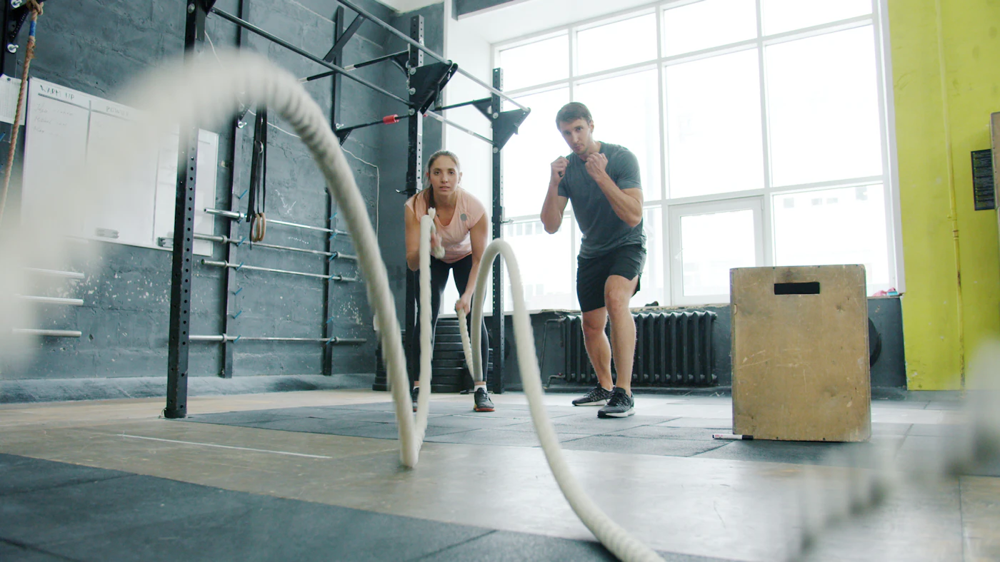
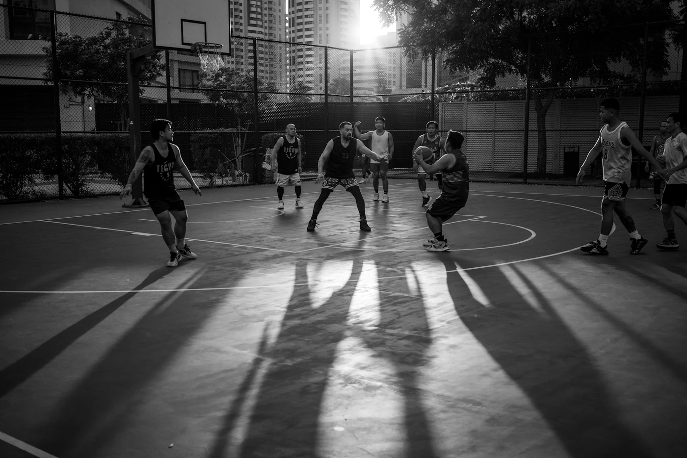
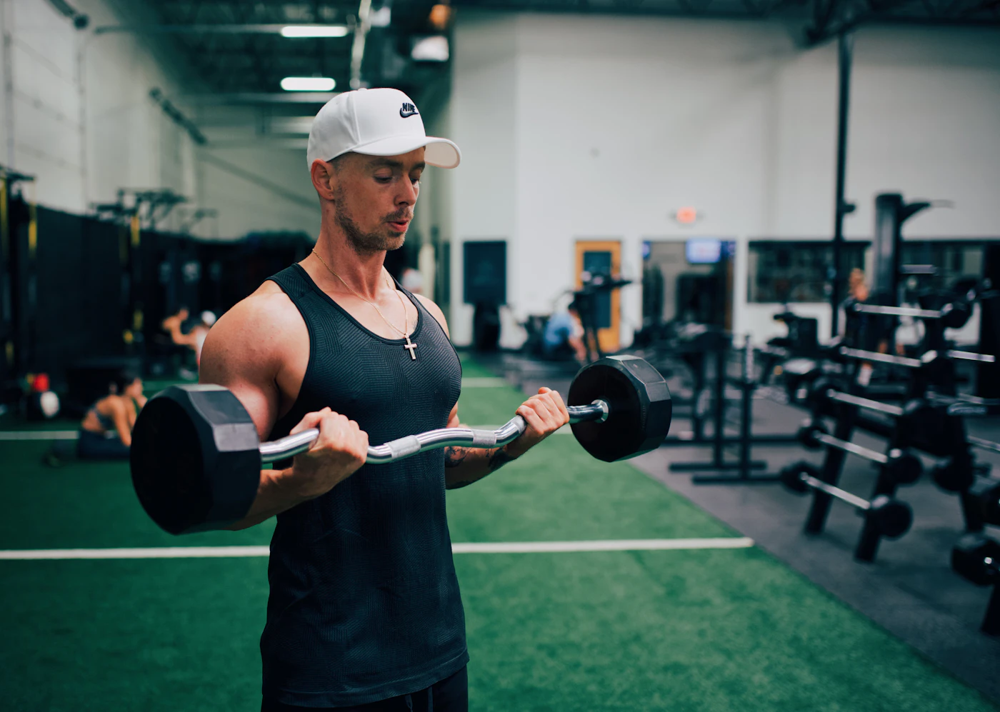

موردی با این مشخصات پیدا نشد.
توجه: این فهرست برای معرفی و دسترسی اولیه تنظیم شده است. نشانی وبسایتها ممکن است در گذر زمان تغییر کند؛ موارد فاقد پیوند یا نشانی نیازمند بازبینی، تا زمان تأیید نهایی با وضعیت مشخص نمایش داده میشوند.
مرجع معرفی فدراسیونها و نهادهای تخصصی ورزش کشور؛ برای آشنایی با حوزه فعالیت هر مجموعه و دسترسی مستقیم به پایگاه اینترنتی آن.


